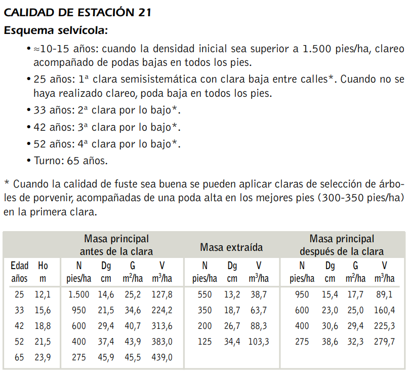

Practical examples and scenario comparison
The design of silvicultural scenarios allows contrasting different management regimes on the same forest stand to evaluate their impact on growth, timber yield, and stand ecological stability.
This guide details the parametrization of two contrasting silvicultural alternatives applied to the same starting stand:
- Control scenario (no intervention): the stand evolves naturally without silvicultural interventions, driven solely by biological growth and competition-induced natural mortality.
- Technical management scenario based on scientific literature: implementation of a reference silvicultural regime for Pinus pinaster afforestation stands in Castilla y León for site quality 21, taken from the Management manual for afforestation stands of Pinus pinaster Ait., Pinus sylvestris L. and Pinus nigra Arn. in Castilla y León (del Río et al., 2006).
Table of contents
- Starting forest stand
- Reference silvicultural schedule
- Design of the control scenario
- Design of the technical management scenario
- Table of operations in SIMANFOR web
- Comparison of results between alternatives
- Bibliographic references
Starting forest stand
The study case is located in an afforestation stand of maritime pine (Pinus pinaster Ait.) in Castilla y León, characterized by a high site quality defined by a site index of 21 meters at the reference age of 50 years ($SI = 21\text{ m}$).
The dasometric variables of the stand at the start of the simulation (age 25 years, prior to the first intervention) are as follows:
- Stand age ($E$ or $\text{Age}$): 25 years
- Stand density ($N$): 1,500 stems/ha
- Dominant height ($Ho$): 12.1 m
- Quadratic mean diameter ($Dg$): 14.6 cm
- Basal area ($G$): 25.2 m²/ha
- Total volume over bark ($V$): 127.8 m³/ha
To replicate this exercise directly on the SIMANFOR web platform, the pre-formatted Excel inventory file containing the two mandatory sheets (Parcelas and PiesMayores) is available for download:
Download sample initial inventory (inventario_ppinaster_cyl_calidad21.xlsx)
Starting from this same initial inventory loaded onto the web platform, two independent management scenarios are configured to evaluate stand performance across a 65-year rotation.
Reference silvicultural schedule
The silvicultural schedule proposed by del Río et al. (2006) for Pinus pinaster at site quality 21 establishes the following technical timeline:

- 10 to 15 years: if initial density exceeds 1,500 stems/ha, juvenile thinning (pre-commercial clearing) combined with low pruning.
- 25 years: first semi-systematic thinning with low thinning between rows.
- 33 years: second thinning from below.
- 42 years: third thinning from below.
- 52 years: fourth thinning from below.
- 65 years: final harvest (rotation age).
Stand biological age and simulation starting point
All timeline references in the silvicultural regime refer to stand biological age, not to elapsed years since simulation start.
Since our sample inventory starts at 25 years with 1,500 stems/ha, the simulation begins directly at that milestone. Consequently, modeling earlier juvenile treatments between ages 10 and 15 is unnecessary, as the initial stand is already positioned for its first commercial thinning.
Design of the control scenario
The control scenario (commonly referred to as No intervention, natural succession, or walk-away management) simulates spontaneous stand development in the absence of any harvesting or silvicultural treatment.
Dasometric logic of the control
Because density remains unmanaged, the stand undergoes intense intra-specific competition for light, soil moisture, and nutrients:
- Individual tree diameter increment slows down substantially due to continuous crown closure.
- The height-to-diameter ratio (slenderness index, $H/Dg$) rises, increasing stand vulnerability to windthrow and snow damage.
- Natural mortality through self-thinning increases, accumulating standing and fallen deadwood that raises forest fire propagation risk.
Configuration on SIMANFOR web
On the web platform, this scenario is set up as follows:
- Create a new scenario named
Pinus pinaster - Control no intervencion. - Select the uploaded inventory and the forest model. In this example, IBEROPT calibrated is selected provisionally, as the specific stand dynamic model from del Río et al. (2006) is not yet implemented in the simulator.
- Schedule consecutive growth projections using the model standard time step (5 years) until reaching rotation age (65 years):
- 8 consecutive projections with
time = 5(40 years of biological advance: $25 + 40 = 65\text{ years}$).
- 8 consecutive projections with
- Do not add any operation of type
Aplicar Corta.
TODO: Implement in the simulator the dynamic stand model by Del Río et al. (2006) for Pinus pinaster in Castilla y León and update this example replacing IBEROPT with the new model.
Design of the technical management scenario
The second scenario translates technical prescriptions from scientific literature into specific simulator operations. Each intervention requires specifying the dasometric target variable ($N$, $G$, or $V$) and the exact harvesting intensity.
In forest growth models within SIMANFOR, projections advance in discrete 5-year cycles (time = 5). To adapt theoretical intervention ages (25, 33, 42, 52, and 65 years) to standard 5-year intervals, thinnings are scheduled at the closest 5-year milestones: 25, 35, 45, 55, and 65 years. Exactly two 5-year projection cycles (10 years of growth) elapse between consecutive thinning events.
Intervention at 25 years: first thinning
At age 25, reference prescription values are:
- Pre-thinning stand: $N = 1,500\text{ stems/ha}$, $G = 25.2\text{ m}^2/\text{ha}$, $V = 127.8\text{ m}^3/\text{ha}$.
- Extracted volume and trees: $N = 550\text{ stems/ha}$, $V = 38.7\text{ m}^3/\text{ha}$.
- Residual stand: $N = 950\text{ stems/ha}$, $G = 17.7\text{ m}^2/\text{ha}$, $V = 89.1\text{ m}^3/\text{ha}$.
Total extraction intensity relative to stand density is:
$$\text{Total intensity} = \left(\frac{550}{1,500}\right) \cdot 100 = 36.7\,\%$$
Because the prescription calls for a semi-systematic thinning (combining row extraction with selective thinning from below between rows), it is configured in SIMANFOR via two consecutive steps at simulation start (execution time = 0):
- Step 1: Systematic cutting (skid trail opening):
- Model:
Corta sistemática - Criterion:
Densidad - Intensity: opening 1 row every 5 lines ($\approx 20\,\%$ systematic removal). This removes 300 stems/ha ($1,500 \cdot 0.20 = 300$), leaving 1,200 stems/ha.
- Step 2: Thinning from below (selection between rows):
- Model:
Corta por lo bajo - Criterion:
Densidad - Intensity: 250 stems/ha remain to be extracted ($550 - 300 = 250$) out of the 1,200 remaining trees: $$\text{Intensity from below} = \left(\frac{250}{1,200}\right) \cdot 100 = 20.8\,\%$$
This approach extracts exactly the targeted 550 stems/ha while maintaining the prescribed semi-systematic spatial structure.
Intervention at 35 years: second thinning
Following the first thinning, the stand grows for 10 years through two consecutive 5-year projections to reach 35 years of biological age (practical adaptation of the 33-year literature milestone).
At this age, target values are:
- Pre-thinning stand: $N = 950\text{ stems/ha}$, $G = 34.6\text{ m}^2/\text{ha}$, $V = 224.2\text{ m}^3/\text{ha}$.
- Extracted trees: $N = 350\text{ stems/ha}$, $V = 63.7\text{ m}^3/\text{ha}$.
- Residual stand: $N = 600\text{ stems/ha}$, $G = 25.0\text{ m}^2/\text{ha}$, $V = 160.4\text{ m}^3/\text{ha}$.
A thinning step from below is scheduled at execution time 0:
- Harvest model:
Corta por lo bajo - Execution time:
0 - Criterion and intensity:
- By density ($N$): $(350 / 950) \cdot 100 = 36.8\,\%$
- (Alternatively, by basal area: $((34.6 - 25.0) / 34.6) \cdot 100 = 27.7\,\%$, or by volume: $(63.7 / 224.2) \cdot 100 = 28.4\,\%$)
- Age bounds:
min_age = 33,max_age = 37.
Intervention at 45 years: third thinning
The stand is projected across two additional 5-year cycles (10 accumulated years) from age 35 to age 45 (adaptation of the 42-year milestone).
At age 45, literature values indicate:
- Pre-thinning stand: $N = 600\text{ stems/ha}$, $G = 40.7\text{ m}^2/\text{ha}$, $V = 313.6\text{ m}^3/\text{ha}$.
- Extracted trees: $N = 200\text{ stems/ha}$, $V = 88.3\text{ m}^3/\text{ha}$.
- Residual stand: $N = 400\text{ stems/ha}$, $G = 29.4\text{ m}^2/\text{ha}$, $V = 225.3\text{ m}^3/\text{ha}$.
The following thinning step is scheduled:
- Harvest model:
Corta por lo bajo - Execution time:
0 - Intensity based on density ($N$): $$\text{Intensity} = \left(\frac{200}{600}\right) \cdot 100 = 33.3\,\%$$ (Alternatively, on basal area: $27.8\,\%$ of $G$, or on volume: $28.2\,\%$ of $V$).
- Age bounds:
min_age = 43,max_age = 47.
Intervention at 55 years: fourth thinning
The stand is projected once again over 10 years (two 5-year projections) from age 45 to age 55 (adaptation of the 52-year milestone).
At age 55, target values are:
- Pre-thinning stand: $N = 400\text{ stems/ha}$, $G = 43.9\text{ m}^2/\text{ha}$, $V = 383.0\text{ m}^3/\text{ha}$.
- Extracted trees: $N = 125\text{ stems/ha}$, $V = 103.3\text{ m}^3/\text{ha}$.
- Residual stand: $N = 275\text{ stems/ha}$, $G = 32.3\text{ m}^2/\text{ha}$, $V = 279.7\text{ m}^3/\text{ha}$.
The final commercial thinning is configured:
- Harvest model:
Corta por lo bajo - Execution time:
0 - Intensity based on density ($N$): $$\text{Intensity} = \left(\frac{125}{400}\right) \cdot 100 = 31.3\,\%$$ (Or $26.4\,\%$ on $G$, or $27.0\,\%$ on $V$).
- Age bounds:
min_age = 53,max_age = 57.
Reaching rotation age
From age 55 to age 65, the final 10 years of rotation unfold via two consecutive 5-year projections. The 275 selected crop trees per hectare reach the final rotation age of 65 years.
At age 65, the stand accumulates the following final standing inventory:
- Stand density ($N$): 275 stems/ha
- Quadratic mean diameter ($Dg$): 45.9 cm
- Dominant height ($Ho$): 23.9 m
- Basal area ($G$): 45.5 m²/ha
- Final standing volume over bark ($V$): 439.0 m³/ha
Do not schedule a 100 % clearcut at rotation age
As explained in the general scenarios guide, do not schedule a 100 % final cut at age 65. If a clearcut is applied, the Excel output workbook will report zero standing stock at the final node. The simulation must end on the final projection so that the harvestable stock can be evaluated in the Summary and Plots sheets.
Table of operations in SIMANFOR web
The following table summarizes the complete 13-step chronological sequence entered into the web interface for the managed scenario, where all projections advance in 5-year steps (time = 5):
| Step | Web operation | Main parameters | Age bounds (min_age - max_age) |
Silvicultural objective |
|---|---|---|---|---|
| 1 | Aplicar Corta |
Systematic, $N = 20.0\,\%$, time = 0 |
23 - 27 | Skid trail opening (age 25) |
| 2 | Aplicar Corta |
From below, $N = 20.8\,\%$, time = 0 |
23 - 27 | Selection between rows (age 25) |
| 3 | Aplicar Proyección |
time = 5 |
25 - 31 | Growth from 25 to 30 years |
| 4 | Aplicar Proyección |
time = 5 |
30 - 36 | Growth from 30 to 35 years |
| 5 | Aplicar Corta |
From below, $N = 36.8\,\%$, time = 0 |
33 - 37 | 2nd thinning: reduction to 600 stems/ha (age 35) |
| 6 | Aplicar Proyección |
time = 5 |
35 - 41 | Growth from 35 to 40 years |
| 7 | Aplicar Proyección |
time = 5 |
40 - 46 | Growth from 40 to 45 years |
| 8 | Aplicar Corta |
From below, $N = 33.3\,\%$, time = 0 |
43 - 47 | 3rd thinning: reduction to 400 stems/ha (age 45) |
| 9 | Aplicar Proyección |
time = 5 |
45 - 51 | Growth from 45 to 50 years |
| 10 | Aplicar Proyección |
time = 5 |
50 - 56 | Growth from 50 to 55 years |
| 11 | Aplicar Corta |
From below, $N = 31.3\,\%$, time = 0 |
53 - 57 | 4th thinning: reduction to 275 stems/ha (age 55) |
| 12 | Aplicar Proyección |
time = 5 |
55 - 61 | Growth from 55 to 60 years |
| 13 | Aplicar Proyección |
time = 5 |
60 - 66 | Final growth to rotation age (age 65) |
Use of age bounds (min_age and max_age)
Defining an age range using min_age and max_age is only necessary when the uploaded inventory contains multiple plots with heterogeneous ages. In that case, age bounds act as a conditional filter so that a thinning or treatment triggers only on stands whose current age falls within the specified window.
When the inventory consists of a single plot (as in this sample exercise) or multiple even-aged plots sharing the same initial age, configuring these fields is optional, as operations execute sequentially step by step in the scheduled chronological order.
Comparison of results between alternatives
When downloading the Excel workbooks from both simulations and inspecting the Summary and Plots sheets, results demonstrate two completely distinct silvicultural trajectories:
| Dasometric variable at rotation (65 years) | Scenario 1: Control (no intervention) | Scenario 2: Technical management regime |
|---|---|---|
| Residual density ($N$) | High (reduced only by self-thinning) | 275 stems/ha (regulated density) |
| Quadratic mean diameter ($Dg$) | Low (growth stagnation through competition) | 45.9 cm (large high-value timber) |
| Thinning extracted volume ($\sum V_{\text{cortas}}$) | 0 m³/ha | 294.0 m³/ha ($38.7 + 63.7 + 88.3 + 103.3$) |
| Final standing volume ($V_{\text{final}}$) | Variable (high proportion of slender/dead stems) | 439.0 m³/ha (premium sawtimber) |
| Total volumetric yield | Lower merchantable yield | 733.0 m³/ha ($294.0 + 439.0$) |
| Fire and pest vulnerability | High (fuel load accumulation and crown continuity) | Low (horizontal discontinuity and vigorous crowns) |
| Slenderness coefficient ($H/Dg$) | High (slender stems, lower stability against snow) | Balanced (sturdy stems with greater taper) |
Technical conclusions
- Growth concentration effect: The four commercial thinnings do not reduce cumulative stand volume; rather, they channel available light, soil water, and nutrients into the 275 crop trees, achieving a quadratic mean diameter of 45.9 cm at rotation.
- Intermediate timber revenue: The managed scenario provides 294 m³/ha of merchantable timber across four separate harvest events, generating regular financial returns throughout the rotation.
- Stand resilience: In the unmanaged control, elevated stocking levels produce slender trees prone to wind and snow damage, while heavy suppression mortality increases ground fuel loads. Active silviculture enhances structural stability and adaptive capacity against environmental disturbances.
Bibliographic references
- del Río, M., López, E., Montero, G. (2006). Manual de gestión para masas procedentes de repoblación de Pinus pinaster Ait., Pinus sylvestris L. y Pinus nigra Arn. en Castilla y León. Junta de Castilla y León. Consejería de Medio Ambiente. Available at: ResearchGate.
- Technical documentation of IBEROPT calibrated.
- Methodological guide on Harvest models and silvicultural treatments.
Translated using AI translation assistant.